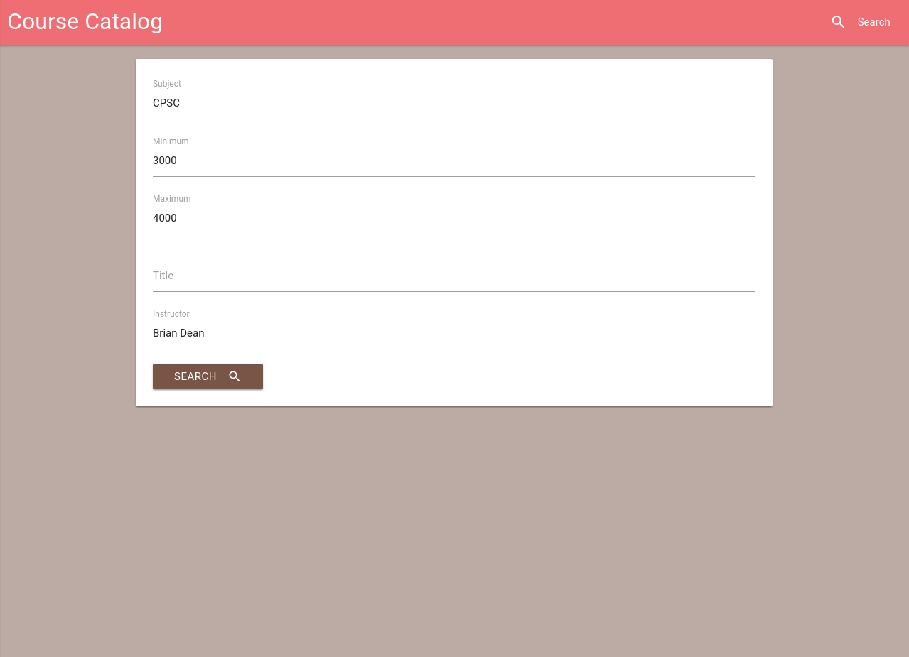

Max's CTF Walkthrough
- Documented my steps and thought processes to solve cybersecurity-related problems.
- Available to view here (Use arrow keys to navigate)
Pinschr Web Client

Chart.js Clip Plugin
Clemson Course Catalog
- Alternative interface for browsing and searching for classes at Clemson
- Focuses on speed and data density
- Web app written in Flask
- Optimized for mobile and desktop viewing
- Source code here.

This Website
- Static site generated using Jekyll.
- /startpage/ displays the current date and allows you to perform Google searches.
- /presentations/ allows you to read about and view presentations I've made via the reveal.js javascript library.
Other Projects
I have other projects relating to proprietary file format reverse engineering and desktop applications, but I did not feel that they were relevant so I did not include them. Most of the projects I do are open source and can be found on my Github.